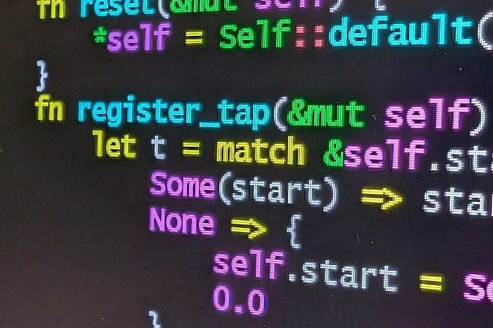
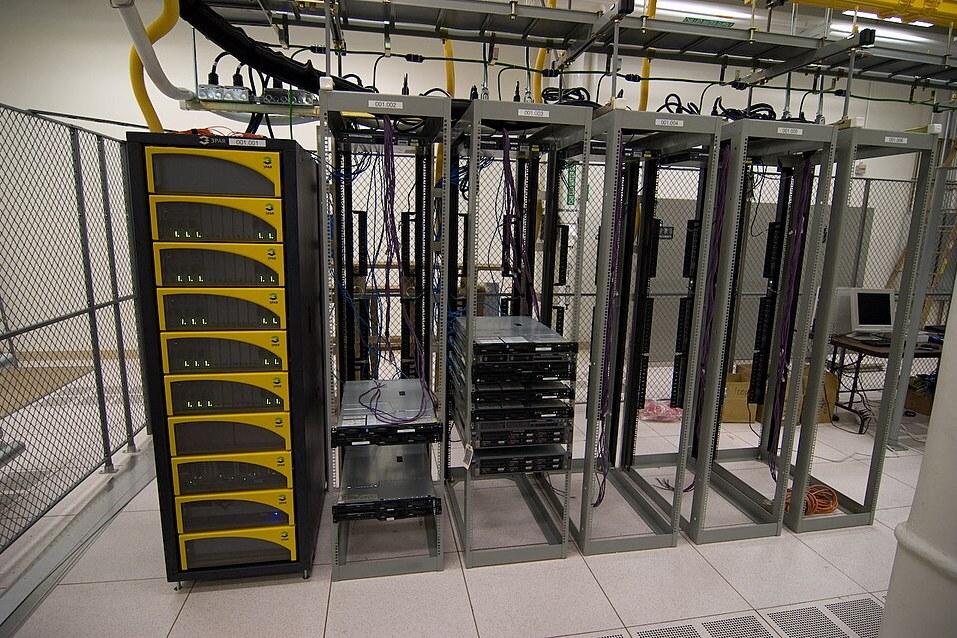
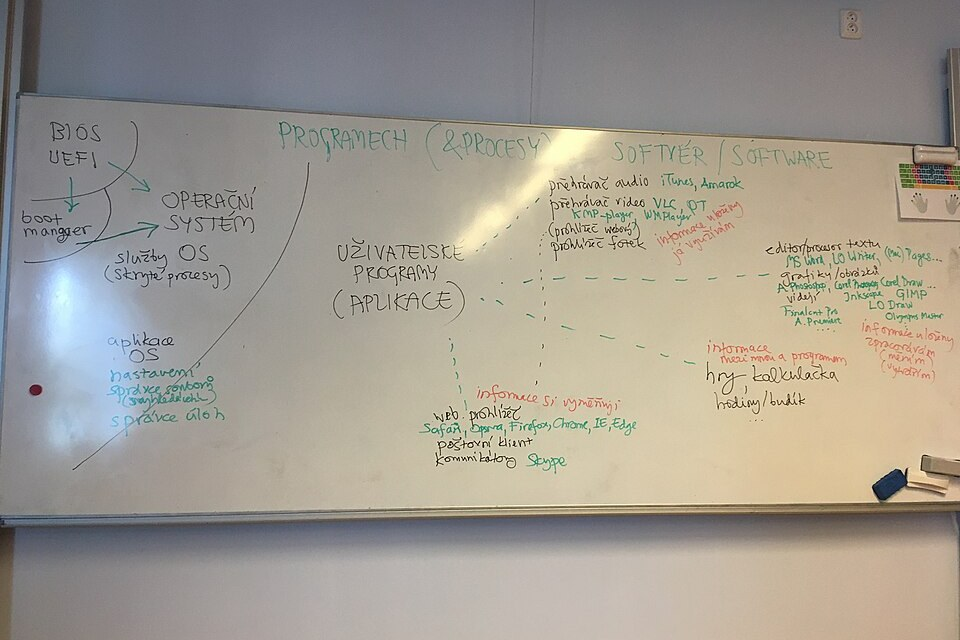
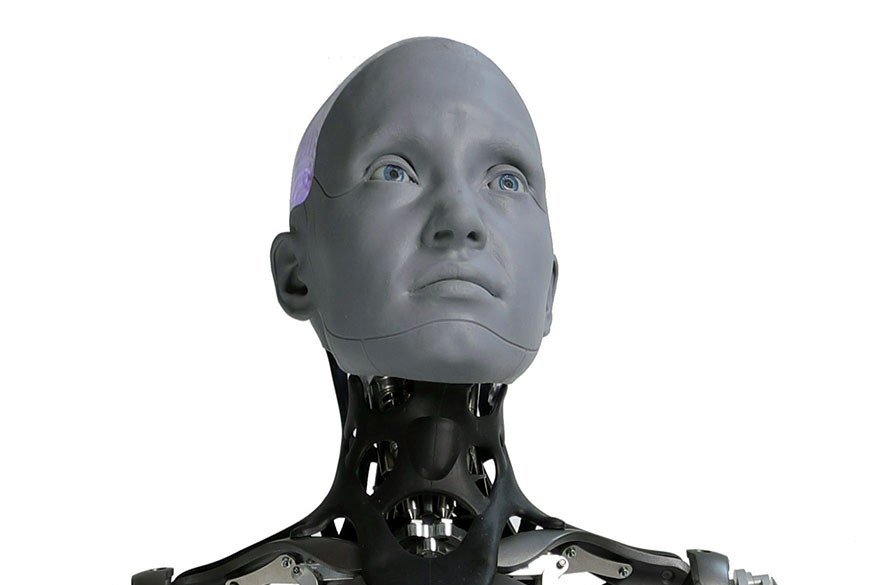
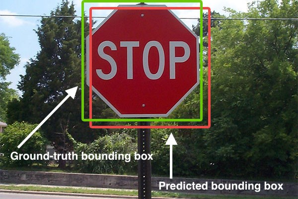
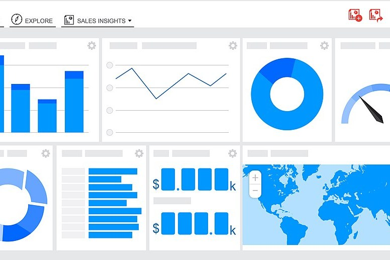

Salidas de mis tres opciones
1. Ingeniería Informática
Este grado permite trabajar en empresas tecnológicas, consultoras y departamentos informáticos de diferentes organizaciones, tanto privadas como de la administración pública.

1.1. Desarrollador de software
Diseña, programa y prueba aplicaciones para ordenadores, móviles o páginas web, normalmente en equipo con otros programadores. En el grado se trabaja sobre todo en la mención de Ingeniería del Software.

1.2. Administrador de sistemas
Instala y mantiene los servidores, las redes y los ordenadores de una empresa para que funcionen sin cortes y se hagan copias de seguridad. También vigila la seguridad para evitar ataques y pérdidas de datos.

1.3. Analista de sistemas
Habla con la empresa para entender qué necesita y diseña cómo tiene que ser el sistema informático antes de que se programe. Hace de puente entre los clientes y los programadores, así que tiene que saber explicar bien las cosas.
Cómo llegar
- Hacer el Bachillerato (mejor el de Ciencias y Tecnología) y la PAU. Para este grado ponderan 0,2 Matemáticas II, Física, Química, Dibujo Técnico II y Tecnología e Ingeniería II. En 2026 la nota de corte fue 8,490.
- En junio, hacer la preinscripción en la CiUG con la aplicación NERTA, poniendo el grado entre mis cinco opciones por orden de preferencia, y matricularme en la web de la UDC cuando salga en una lista.
- Aprobar los 240 ECTS en cuatro cursos: primero es de formación básica (60 ECTS), en tercero elijo una de las cinco menciones y en cuarto hago el Trabajo de Fin de Grado.
2. Inteligencia Artificial
Este grado prepara profesionales capaces de desarrollar sistemas inteligentes que aprenden de los datos y automatizan tareas en campos como la medicina, la industria o el transporte.

2.1. Ingeniero de Inteligencia Artificial
Crea sistemas inteligentes que toman decisiones o automatizan tareas, como asistentes de voz, robots o programas que detectan fraudes. Tiene que elegir qué técnica de IA usar en cada caso y comprobar que el sistema funciona bien y de forma responsable.
2.2. Ingeniero de aprendizaje automático
Entrena modelos con muchos datos para que aprendan a hacer predicciones, por ejemplo recomendar películas o detectar correos de spam. Después los prueba y los mejora para que se equivoquen lo menos posible.

2.3. Ingeniero de visión artificial
Crea programas que entienden imágenes y vídeos, por ejemplo para que un coche autónomo reconozca una señal de stop o para detectar enfermedades en radiografías. Para ello entrena modelos con miles de imágenes etiquetadas.
Cómo llegar
- Hacer el Bachillerato (mejor el de Ciencias y Tecnología) y sacar mucha nota en la PAU, porque es el grado que más nota pide (10,214 en 2026). Ponderan 0,2 materias como Matemáticas II, Matemáticas Aplicadas a las Ciencias Sociales II, Física, Química, Biología y Tecnología e Ingeniería II.
- En junio, hacer la preinscripción en la CiUG con la aplicación NERTA eligiendo el grado de la UDC (también lo dan la USC y la UVigo) y matricularme en la web de la UDC cuando salga en una lista.
- Aprobar los 240 ECTS en cuatro cursos y hacer el Trabajo de Fin de Grado en el último curso.
3. Ciencia e Ingeniería de Datos
Este grado forma profesionales capaces de gestionar, procesar y analizar grandes cantidades de información para obtener conclusiones útiles en sectores como la banca, la sanidad o la industria.

3.1. Analista de datos
Recoge los datos de una empresa, los ordena y los convierte en gráficos e informes que ayudan a tomar decisiones. Por ejemplo, puede estudiar qué productos se venden más y en qué época del año.
3.2. Científico de datos
Usa estadística y programación para crear modelos que predicen lo que puede pasar, como cuántos clientes va a tener una tienda el mes que viene. Suele trabajar con herramientas como Python y Jupyter Notebook.
3.3. Ingeniero de datos
Construye y mantiene los sistemas que guardan y mueven grandes cantidades de datos para que los analistas y los científicos de datos puedan usarlos. Trabaja con bases de datos y servidores, a veces en la nube.
Cómo llegar
- Hacer el Bachillerato (mejor el de Ciencias y Tecnología) y la PAU. Para este grado ponderan 0,2 Matemáticas II, Física, Química, Biología y Tecnología e Ingeniería II, pero Matemáticas Aplicadas a las Ciencias Sociales II no pondera. En 2026 la nota de corte fue 9,658.
- En junio, hacer la preinscripción en la CiUG con la aplicación NERTA, poniendo el grado entre mis cinco opciones por orden de preferencia, y matricularme en la web de la UDC cuando salga en una lista.
- Aprobar los 240 ECTS en cuatro cursos y hacer el Trabajo de Fin de Grado en el último curso.
Las ponderaciones son las de la PAU 2027 y las notas de corte son las del último plazo de 2026, las dos publicadas por la CiUG.
Conclusión
Después de comparar mis tres opciones, he visto que se parecen bastante: las tres duran cuatro años, tienen 240 créditos y se estudian en la misma facultad. La diferencia está en lo que enseñan. Ingeniería Informática es la más general, tiene más plazas y pide menos nota, así que encaja con alguien a quien le gusta la informática pero todavía no sabe en qué especializarse. Inteligencia Artificial encaja con alguien que quiere crear programas que aprenden solos. Ciencia e Ingeniería de Datos encaja con alguien a quien le gustan mucho las matemáticas y la estadística. Estas dos últimas tienen menos plazas y piden más nota.